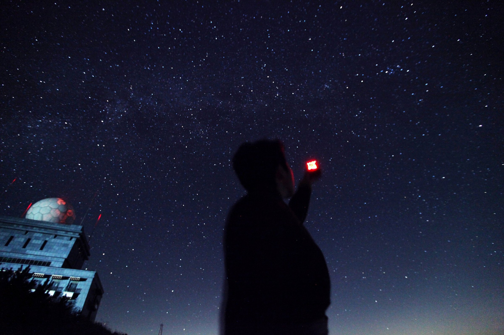
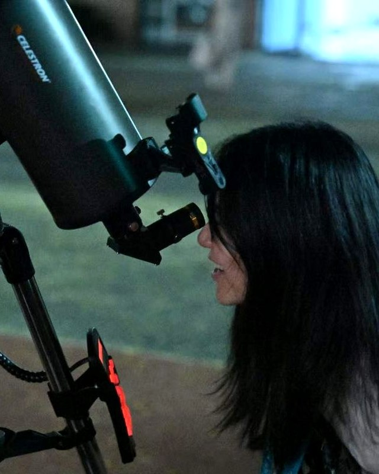

我们做什么
光污染，是夜间使用人造光带来的不利影响—— 包括辉光、眩光、溢光和夜间能见度受损。 它让城市里的孩子看不见银河，让候鸟迷航，也让天文观测失去最后的阵地。
这个网站记录一项还在进行中的工作：在全杭州范围内， 用卫星遥感、地面实测与空间建模，找出一块真正可达的暗夜空间， 并为它提出一套可落地的照明改造方案。
需要说明的是：这项研究始于天文，但不止于天文。 夜间照明影响候鸟迁徙、昆虫数量与夜行动物的活动范围， 同时大量电力被送往不需要照亮的方向。
本研究的目的是保护市区内岌岌可危的暗夜资源，而不是治理光污染。 把看星星的权利还给孩子：让孩子们放学后、周末晚上， 走几步路或坐几站公交，就能在一块不太亮的地方看到土星、木星、猎户座、天鹅座。 哪怕看不到银河，也能知道星空是真实存在的，不是课本插图。
